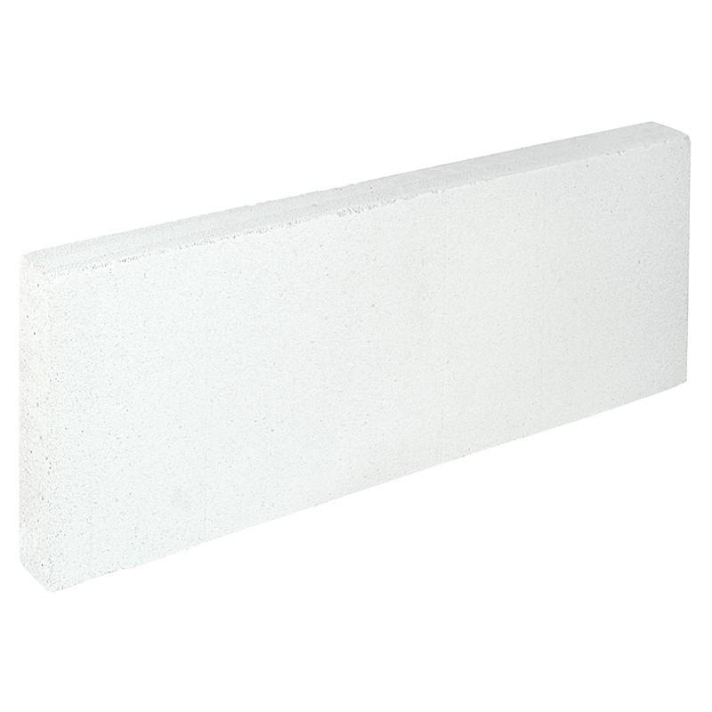

Магазин строительных блоков
Блок газобетонный без доборов 50x250x625 мм

Описание
Газобетонный блок без доборов размером 50x250x625 мм – изделие, которое нашло широкое применение в
современном строительстве. Используется преимущественно при возведении перегородок, монтируется с
помощью обычных связывающих смесей.
Характеристики
- Артикул: 12720906
- Вес, кг: 12
- Высота (см): 25
- Длина (см): 62.5
- Толщина (см): 5
- Плотность (кг/м³): 500
- Тип продукта: Газобетонный блок